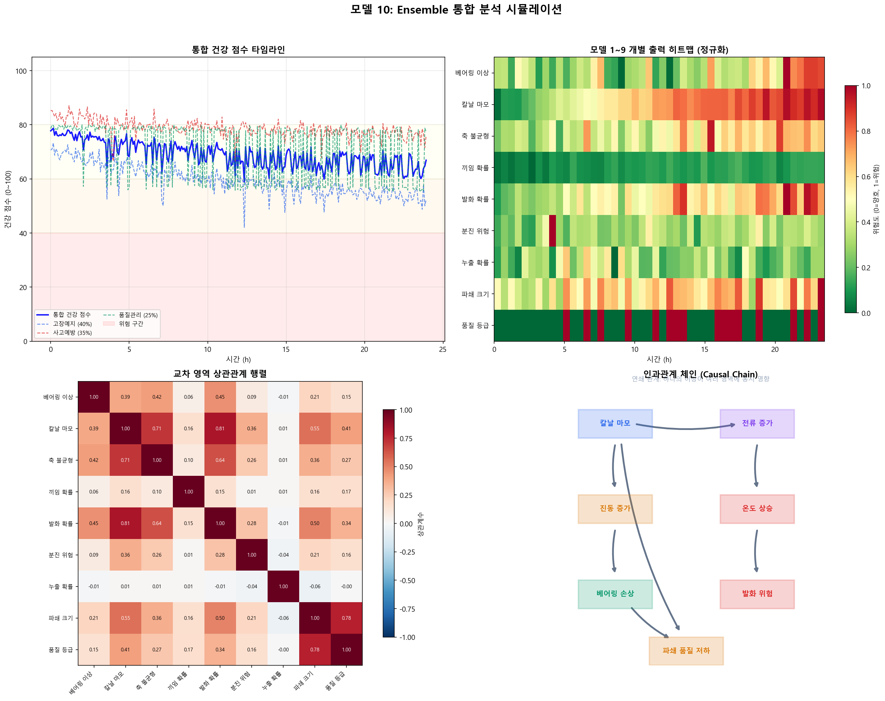

Ensemble 통합 분석
모델 1~9의 출력을 융합하여 설비-품질-안전을 하나의 건강 점수로 통합
0 Ensemble 통합분석이란?
왜 통합 분석이 필요한가?
개별 모델(1~9)은 각자의 영역만 봅니다. 하지만 실제 슈레더에서는 영역 간 상호 영향이 존재합니다. 칼날 마모가 전류 증가를 유발하고, 이것이 온도 상승으로 이어져 발화 위험을 높이는 연쇄 관계를 개별 모델만으로는 파악할 수 없습니다.
연쇄 영향의 예
칼날 마모 증가가 유발하는 연쇄 영향:
- 전류 증가 → 모터 과열 → 발화 위험 상승 (안전)
- 파쇄 크기 증가 → 품질 저하 (품질)
- 진동 증가 → 베어링 손상 가속 (고장예지)
이 3가지 영향이 동시에 발생하지만, 모델 2(마모), 모델 5(발화), 모델 8(품질), 모델 1(베어링)은 각자 별개로 판단합니다.
통합 분석의 역할
모델 10은 이 모든 정보를 하나로 모아 통합 건강 점수(0~100)를 산출하고, 영역 간 상관관계 맵을 제공합니다.
Ensemble 구조
1 개별 모델 출력 통합
모델 1~9 출력값
모델 10은 9개 개별 모델의 출력과 12개 센서 집계 데이터, 총 21개 특징을 입력으로 받습니다.
| 번호 | 모델 | 출력 변수 | 범위 | 영역 |
|---|---|---|---|---|
| 1 | 베어링 이상 탐지 | bearing_anomaly_score | 0 ~ 1 | 고장예지 |
| 2 | 칼날 마모 예측 | blade_wear_pct | 0 ~ 100% | 고장예지 |
| 3 | 축 불균형 진단 | imbalance_level | 0 ~ 20 mm/s | 고장예지 |
| 4 | 이물질 끼임 감지 | jamming_probability | 0 ~ 1 | 고장예지 |
| 5 | 발화 감지 | fire_probability | 0 ~ 1 | 사고예방 |
| 6 | 분진 폭발 예측 | dust_risk | 0 ~ 1 | 사고예방 |
| 7 | 전해액 누출 감지 | leak_probability | 0 ~ 1 | 사고예방 |
| 8 | 파쇄 크기 예측 | predicted_size_mm | 20 ~ 120 mm | 품질관리 |
| 9 | RPM 최적화 | quality_grade | 0(우수) ~ 3(불량) | 품질관리 |
3개 서브 모델의 역할
| 서브 모델 | 역할 | 포착하는 패턴 | 가중치 |
|---|---|---|---|
| Random Forest | 현재 상태의 정적 관계 | "마모 80% + 진동 높음 = 위험" | 0.3 |
| LSTM | 시간에 따른 동적 패턴 | "전류가 3일간 서서히 올랐다 = 악화 추세" | 0.4 |
| XGBoost | 복합 교호작용 | "마모+고온+과부하 동시 = 개별 합보다 위험" | 0.3 |
2 가중 평균 건강 점수
영역별 점수 산출
9개 모델 출력을 3개 영역으로 그룹화하고, 각 영역의 건강 점수(0~100)를 산출합니다. 점수가 높을수록 양호합니다.
영역별 점수 산출 공식
# 고장예지 (모델 1~4) 고장예지 = 100 - (베어링이상 × 30 + 칼날마모 × 0.3 + 불균형 × 3 + 끼임확률 × 20) # 사고예방 (모델 5~7) 사고예방 = 100 - (발화확률 × 40 + 분진위험 × 35 + 누출확률 × 25) # 품질관리 (모델 8~9) 품질관리 = 100 - (품질등급 × 20 + |파쇄크기 - 목표| × 0.5)
통합 건강 점수
통합 건강 점수 = 고장예지 × 0.40 + 사고예방 × 0.35 + 품질관리 × 0.25
등급 판정
| 통합 점수 | 최저 영역 | 등급 | 조치 |
|---|---|---|---|
| 80 이상 | 60 이상 | 양호 | 정상 운전 — 모니터링 유지 |
| 60~79 | 40 이상 | 주의 | 점검 계획 수립 권고 |
| 40~59 | 20 이상 | 경고 | 조기 정비 필요 — 운전 조건 완화 |
| 40 미만 | 20 미만 | 위험 | 즉시 정비 또는 운전 중지 검토 |
약점 기반 판정: 통합 점수가 높더라도 개별 영역 중 하나라도 위험 수준이면 전체를 위험으로 판정합니다. 예를 들어, 고장예지=90, 사고예방=90이더라도 품질관리=15이면 전체 등급은 "위험"입니다.
3 상관관계 분석
교차 영역 상관관계
Random Forest의 Feature Importance와 피어슨 상관계수를 이용하여 모델 출력 간의 관계를 분석합니다.
주요 상관관계 패턴
| 원인 변수 | 결과 변수 | 강도 | 설명 |
|---|---|---|---|
| 칼날 마모 (모델 2) | 파쇄 크기 (모델 8) | 강함 | 마모율 70% 이상 시 파쇄 크기 증가 경향 |
| 칼날 마모 (모델 2) | 발화 확률 (모델 5) | 강함 | 마모 → 과부하 → 과열 → 발화 위험 |
| 베어링 이상 (모델 1) | 축 불균형 (모델 3) | 중간 | 베어링 손상 → 축 정렬 불량 |
| 분진 위험 (모델 6) | 발화 확률 (모델 5) | 위험 | 분진 + 열원 = 분진 폭발 위험 |
| 베어링 이상 (모델 1) | 파쇄 균일도 (모델 8) | 중간 | 축 진동 → 파쇄 불균일 |
Random Forest Feature Importance
통합 건강 점수에 대한 각 입력 변수의 기여도를 Random Forest로 분석합니다. 기여도가 높은 변수는 건강 점수에 큰 영향을 미치는 핵심 지표입니다.
기여도가 가장 높은 변수는 일반적으로 칼날 마모와 베어링 이상입니다. 이 두 가지가 다른 모든 영역에 연쇄적으로 영향을 미치기 때문입니다.
4 인과관계 체인
주요 인과관계 체인
상관관계(동시 발생)를 넘어 인과관계(원인 → 결과)를 파악하면 근본 원인을 찾아 선제 대응할 수 있습니다.
체인 1: 칼날 마모 → 발화 위험
칼날 마모 ↑
→
전류 증가 ↑
→
모터 과열 ↑
→
발화 위험 ↑
체인 2: 칼날 마모 → 품질 저하
칼날 마모 ↑
→
절삭력 저하
→
파쇄 크기 ↑
→
품질 등급 저하
체인 3: 칼날 마모 → 베어링 손상
칼날 마모 ↑
→
진동 증가 ↑
→
베어링 부하 ↑
→
베어링 손상 가속
체인 4: 분진 + 발화 복합 위험
분진 농도 ↑
+
온도 상승 ↑
→
분진 폭발 위험!
주의: 상관관계 분석은 동시 발생 패턴을 보여줄 뿐, 반드시 인과관계를 의미하지는 않습니다. 인과관계 체인은 공학적 지식(도메인 전문가)의 검증을 거쳐 정의됩니다.
5 시뮬레이션 결과
시뮬레이션 설정
| 항목 | 설정값 |
|---|---|
| 시뮬레이션 기간 | 24시간 (5분 간격, 288 데이터 포인트) |
| 시나리오 | 칼날 마모 40%에서 시작, 점진적 악화 |
| 모델 출력 | 9개 모델 Mock 출력 (인과관계 반영) |
| 영역 가중치 | 고장예지 40%, 사고예방 35%, 품질관리 25% |
결과 플롯
아래 그래프는 simulation.py 실행 시 생성되는 결과입니다.

그래프 해석
- 좌상단 — 통합 건강 점수 타임라인: 24시간에 걸쳐 통합 건강 점수와 3개 영역별 점수의 변화를 보여줍니다. 칼날 마모가 진행됨에 따라 전체 점수가 서서히 하락합니다.
- 우상단 — 모델 1~9 히트맵: 각 모델의 정규화된 출력을 히트맵으로 표현합니다. 빨간색이 짙을수록 위험 수준이 높습니다.
- 좌하단 — 상관관계 행렬: 9개 모델 출력 간의 피어슨 상관계수입니다. 칼날 마모와 발화 확률의 강한 양의 상관관계를 확인할 수 있습니다.
- 우하단 — 인과관계 체인: 칼날 마모를 시작점으로 한 연쇄 영향 관계를 시각적으로 보여줍니다.
대시보드 출력 예시
통합 건강 대시보드
╔══════════════════════════════════════════════════════╗ ║ 통합 건강 점수: 72.3 / 100 [주의] ║ ╠══════════════════════════════════════════════════════╣ ║ ║ ║ 영역별 점수: ║ ║ ■■■■■■■■□□ 고장예지: 78.5 (주의) ║ ║ ■■■■■■■□□□ 사고예방: 68.2 (경고 — 분진 상승) ║ ║ ■■■■■■■□□□ 품질관리: 71.0 (보통) ║ ║ ║ ║ 주요 상관관계: ║ ║ ⚠ 칼날 마모(82%) → 파쇄 크기 증가(+8mm) ║ ║ ⚠ 분진 농도 상승 → 환기 강화 필요 ║ ║ ║ ║ 추세: 서서히 악화 ↓ ║ ║ 권고: 칼날 교체 계획 수립 + 환기 점검 ║ ╚══════════════════════════════════════════════════════╝
6 특징 / 장점 / 단점
특징
- Meta-model: 9개 개별 모델 위에 위치한 상위 모델
- Cross-domain: 고장예지, 사고예방, 품질관리 3개 영역을 교차 분석
- Multi-algorithm Ensemble: RF + LSTM + XGBoost 3개 알고리즘 결합
- 단일 점수: 복잡한 상태를 0~100 하나의 숫자로 요약
장점
- Holistic View: 개별 모델이 놓치는 영역 간 연관성을 포착
- Cascading Failure 감지: 연쇄 고장을 사전에 경고
- Single Dashboard Score: 경영진/현장 모두 직관적으로 이해 가능
- 정비 우선순위 결정: 어떤 영역을 먼저 조치할지 명확
- 추세 분석: 악화/개선 경향을 시간축으로 파악
단점
- 복잡성: 3개 서브 모델 + 9개 입력 모델의 유지보수 부담
- 하위 모델 의존: 개별 모델(1~9)이 부정확하면 통합 결과도 부정확
- Latency: 모든 모델의 출력을 수집 후 분석하므로 시간 지연 발생 (< 500ms)
- 초기 데이터 부족: 6개월 이상 운영 데이터 필요
- 과적합 위험: 이벤트 데이터가 적으면 앙상블이 노이즈를 학습할 수 있음
7 슈레더 적용
도입 단계
Phase 1 — 룰 기반 (데이터 부족 시)
데이터가 부족한 초기에는 가중 합산 룰로 통합 점수를 산출합니다. AI 모델 없이도 즉시 적용 가능합니다.
Python — 초기 룰 기반
def rule_based_health_score(domain_scores, weights): """초기 룰 기반 통합 점수""" return sum(domain_scores[k] * weights[k] for k in weights)
Phase 2 — 하이브리드 (6개월~)
실제 고장/사고/품질 이벤트 데이터가 축적되면 RF + LSTM + XGBoost를 학습시키고, 룰 기반과 병행 운영하여 결과를 비교합니다.
Phase 3 — 완전 앙상블 (12개월~)
충분한 데이터 축적 후 앙상블 모델로 전환합니다. 룰 기반은 백업/검증 용도로 유지합니다.
재학습 주기
| 유형 | 주기 | 트리거 |
|---|---|---|
| 정기 재학습 | 3개월 | 이벤트 데이터 축적 |
| 비정기 재학습 | 즉시 | 대규모 이벤트(고장, 사고) 발생 후 |
| 가중치 조정 | 자동 | 검증 세트 성능 기준으로 RF/LSTM/XGB 가중치 자동 최적화 |
운영 시 주의사항
- 개별 모델 우선 안정화: 모델 1~9가 정확해야 통합 분석도 의미가 있습니다. 개별 모델의 정확도를 먼저 검증하세요.
- 상관관계 ≠ 인과관계: 분석 결과는 동시 발생 패턴이므로 운전자의 공학적 판단이 반드시 필요합니다.
- 건강 점수의 용도: 즉시 정지 판단이 아니라 정비 우선순위 결정 지표로 활용합니다.
- 초기 병행 운영: 룰 기반과 앙상블을 병행하여 모델 신뢰도를 검증하세요.